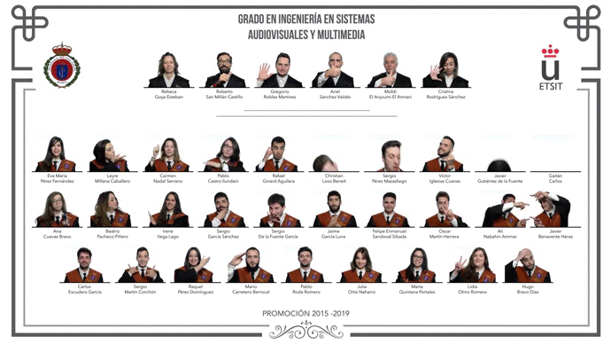

Producto estrella
Orla Interactiva
La orla del siglo XXI. Versión digital de la orla de toda la vida en la que las fotos de tus compañeros y profesores son clickables y reproducen su voz.
- Fotos clickables con audio
- Cada alumno recibe su USB
- Para infantil, primaria, ESO o universidad